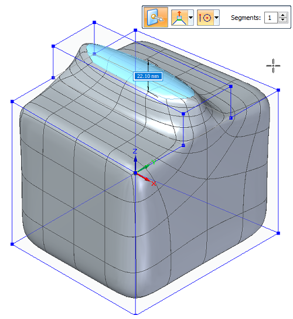
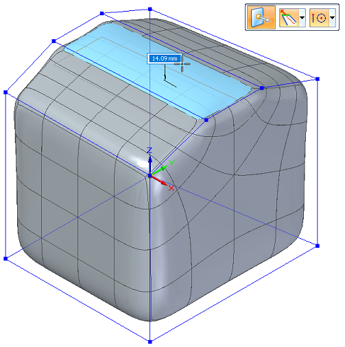
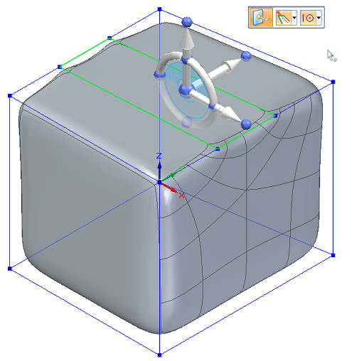

Move cage elements
Move selected cage elements using the steering wheel and the Tip or Lift options on the Move command bar.
-
Select the cage element(s) that you want to move. Press Shift as you select to add or remove elements from the select set. The steering wheel is displayed on the model at keypoints of the selected elements.
In this case, the elements selected remain in place, while new edges and faces are created as a result of the move operation.
-
On the command bar, choose the Tip or Lift Selected Faces option to control how the cage model responds to your changes.
-
Lift adds faces to the model, leaving existing faces in their current positions and orientations as you move the selected elements. Lift can only be used when the select set contains faces.
-
Tip trims, extends, or changes the current orientation of faces connected to the elements in the select set.
A subdivision feature requires exponentially more time to re-draw with each new face you add.
Example:Move with the Lift option selected.
You can enter the number of sections to create in the Segments box. This allows the result to be split as it is created.

Example:Move with the Tip option selected.

-
-
Position the steering wheel on the model to provide an appropriate basis for the changes you want to make.
-
Use the steering wheel axes or torus to move or reorient the selected cage elements.

How do I
Subdivision Modeling workflowMove using Quick Move
Use symmetric mode in Subdivision Modeling
Scale a subdivision model
Split subdivision model faces
Split faces with offset
Offset cage faces
Connect cage faces or edges with a bridge
Delete and fill cage faces
Align a shape to a curve
Learn more
Introduction to Subdivision ModelingUsing PathFinder with subdivision models
Working with cage elements
Creating subdivision features
Working with subdivision features
Moving and rotating cage elements
Look up more details
Subdivision Modeling commandBox command in Subdivision Modeling
Box command bar
Cylinder command in Subdivision Modeling
Cylinder command bar
Sphere command in Subdivision Modeling
Sphere command bar
Torus command
Torus command bar
Scale command in Subdivision Modeling
Blend command
Show Blend Values command
Split command
Split with Offset command
Bridge command
Align to Curve command
Cage Style command